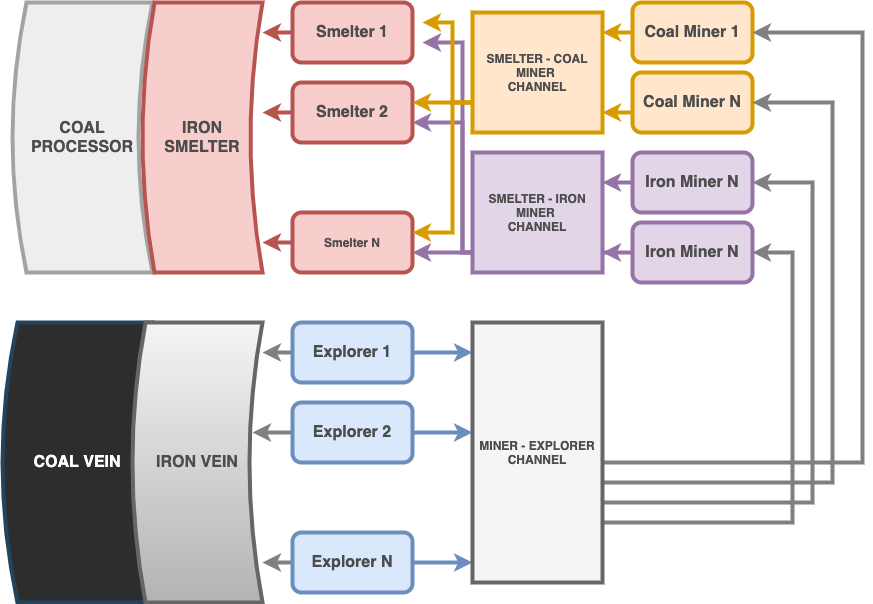

Concurrency¶
Bilgisayar biliminde concurrency(eşzamanlılık), bir programdaki iş birimlerinin veya algoritmaların sonucu etkilemeyecek şekilde sırasız bir biçimde çalıştırılabilmesidir.
İş parçalarını birbirinden bağımsız çalıştırabilmemiz, süreçleri farklı çekirdeklerde yürüterek, işlemciyi maksimum verimde kullanmamızı sağlar.
GO dilinde concurrency goroutineler ile sağlanır.
Goroutines¶
GO routineler boyutları küçük threadler olarak düşünülebilir. Goroutine oluşturmak için sadece fonksiyonu çalıştırırken başına go yazmamız yeterli.
Aşağıdaki uygulamada Work fonksiyonu her çağrıldığında, çalışması bitene kadar uygulamayı blokluyor.
func Work(msg string) {
fmt.Println(msg)
time.Sleep(time.Second * 2)
}
func main() {
Work("work work work work work work...")
Work("zxcasfv")
}
Bloklayan kısımları goroutine olarak çalıştıralım.
func main() {
go Work("work work work work work work...")
go Work("zxcasfv")
}
Programı çalıştırdığımızda ekrana hiçbir şey yazdırmadan sonlanacak. mainfonksiyonu, Work fonksiyonu henüz ekrana bir şeyler yazacak kadar çalışmadan, bitiyor ve program kapanıyor. Ufak bir hile ile Work fonksiyonunun çıktısını alabiliriz.
package main
import (
"fmt"
"time"
)
func Work(msg string) {
fmt.Println(msg)
time.Sleep(time.Second * 2)
}
func main() {
go Work("work work work work work work...")
go Work("zxcasfv")
time.Sleep(time.Second * 1)
}
waitGroup¶
Uygulamanın belli anlarında bazı goroutinelerin bitmesini beklememiz gerekebilir.
WaitGroup ile kaç tane gorouitne çalışacağını öncesinde girip sonrasında işlerini bitirmelerini bekleyebiliriz. Goroutinelerin burada tek yapması gereken, işi bittiğinde WaitGroup'un Done methodunu çalıştırması.
func Work(msg string, wg *sync.WaitGroup) {
time.Sleep(time.Second * 2)
fmt.Println(msg)
wg.Done()
}
func main() {
nWorkers1, nWorkers2 := 5, 4
wg := &sync.WaitGroup{}
wg.Add(nWorkers1)
for i := 0; i < nWorkers1; i++ {
go Work("work-1", wg)
}
wg.Wait()
wg.Add(nWorkers2)
for i := 0; i < nWorkers2; i++ {
go Work("work-2", wg)
wg.Wait()
}
Channels¶
Channeller goroutinelerin birbirleri ile haberleşmesini sağlar.
Yukarıdaki örnekte go ile çalıştırdığımız fonksiyonlardan dönüş değeri alamıyoruz. Channellar ile goroutinin sonucu ana fonksiyona veya başka bir goroutine göndermesini sağlayabiliriz.
channeller make(chan veritipi, buffer) şeklinde oluşturulabilir.
func Work(msg string, ch chan string) {
ch <- msg
time.Sleep(time.Second * 2)
}
func main() {
ch1 := make(chan string)
go Work("work-1", ch1)
go Work("work-2", ch1)
for i := 0; i < 2; i++ {
msg := <-ch1
fmt.Println(msg)
}
}
Mutex¶
Wikipedia Tanımı
In computer science, mutual exclusion is a property of concurrency control, which is instituted for the purpose of preventing race conditions. It is the requirement that one thread of execution never enters its critical section at the same time that another concurrent thread of execution enters its own critical section, which refers to an interval of time during which a thread of execution accesses a shared resource, such as shared memory.
func Click(counter *int, wg *sync.WaitGroup) {
*counter += 1
wg.Done()
}
func main() {
counter := 0
nUsers := 500
wg := &sync.WaitGroup{}
wg.Add(nUsers)
for i := 0; i < nUsers; i++ {
go Click(&counter, wg)
}
wg.Wait()
fmt.Println(counter)
}
func Click(counter *int, wg *sync.WaitGroup, mx *sync.Mutex) {
mx.Lock()
*counter += 1
mx.Unlock()
wg.Done()
}
func main() {
counter := 0
mx := &sync.Mutex{}
nUsers := 500
wg := &sync.WaitGroup{}
wg.Add(nUsers)
for i := 0; i < nUsers; i++ {
go Click(&counter, wg, mx)
}
wg.Wait()
fmt.Println(counter)
}
Select¶
Kanallara veri göndermek veya kanallardan veri beklemek uygulamayı bloklar. Select aynı anda birkaç tane kanalı beklememize olanak sağlar.
Aşağıdaki örnekte 2 goroutine chan1 ve chan2 kanallarına sürekli veri gönderiyor.
İki kanaldan da gelen tüm verileri sonsuz bir döngü içindeki select yapısı ile alabiliriz.
Herhangi bir kanaldan mesaj geldiğinde select o kanalı bekleyen casee girecek ve
içinde tanımlanan işlemler bittikten sonra döngü kanal bekleme işlemini tekrarlayacaktır.
chan1 := make(chan string)
chan2 := make(chan string)
go func() {
for {
time.Sleep(2 * time.Second)
chan1 <- "one"
}
}()
go func() {
for {
time.Sleep(1 * time.Second)
chan2 <- "two"
}
}()
for {
select {
case msg1 := <-chan1:
fmt.Println(msg1)
case msg2 := <-chan2:
fmt.Println( msg2)
}
}
Zaman Aşımı¶
Yukarıdaki gibi bir program 2 channela da veri gönderilmezse kilitlenecektir. Bu sonsuz döngüyü başka bir channelı bekleyerek kırabiliriz.
Go, bu tür bir amaç için önceden tanımlanmış yapılara sahiptir.
Time modülündeki time.After metodunu bellirlediğimiz bir süreden sonra bir channelı tetiklemek için kullanabiliriz.
chan1 := make(chan string)
chan2 := make(chan string)
go func() {
for {
time.Sleep(1 * time.Second)
chan1 <- "one"
}
}()
go func() {
for {
time.Sleep(2 * time.Second)
chan2 <- "two"
}
}()
for {
select {
case msg1 := <-chan1:
fmt.Println(msg1)
case msg2 := <-chan2:
fmt.Println(msg2)
case <-time.After(time.Second * 1):
fmt.Println("🎵 Brave Sir Robin ran away 🎵")
fmt.Println("🎵 Bravely ran away away 🎵")
return
}
}
Örnek Uygulama¶
Bir gurup işçi demir ve kömür barındıran maden yataklarında maden arayıp, kazıp bu madenleri işlemektedir.
Aşağıdaki uygulamada go dilinin sağladığı concurrency araçları ile işçilerin eş zamanlı olarak nasıl çalıştırılabileceğini görebiliriz.

package main
import (
"fmt"
"strconv"
"sync"
"time"
)
// Vein madenleri barındırır
type Vein struct {
Ores []string
}
// Reveal bir sonraki madeni açığa çıkarır
func (vein *Vein) Reveal() (ore string) {
if len(vein.Ores) == 0 {
return
}
ore = vein.Ores[0]
vein.Ores = vein.Ores[1:]
return ore
}
// Worker madenleri bulur, kazar ve işler
type Worker struct {
name string
}
// Find maden yatağında arama yapar ve bulduğu madeni kazıcılara gönderir
func (w *Worker) Find(vein *Vein, ch chan<- string) {
ore := vein.Reveal()
if ore != "" {
fmt.Println(w.name, "found", ore)
time.Sleep(time.Second * 2)
ch <- ore
}
}
// Mine madeni çıkartır ve işleme kanalına gönderir
func (w *Worker) Mine(finder <-chan string, smelter chan<- string) {
for ore := range finder {
fmt.Println(w.name, "mining", ore)
time.Sleep(time.Second * 1)
smelter <- ore
}
}
// Smelt madenleri eritir veya işler
func (w *Worker) Smelt(coal_miner, iron_miner <-chan string, wg *sync.WaitGroup) {
for {
select {
case coal_ore := <-coal_miner:
time.Sleep(time.Second * 1)
fmt.Println(w.name, "processed", coal_ore)
case iron_ore := <-iron_miner:
time.Sleep(time.Second * 2)
fmt.Println(w.name, "smelted", iron_ore)
}
wg.Done()
}
}
func main() {
wg := &sync.WaitGroup{}
// 100 demir barındıran bir maden oluştur
n_iron_ores := 100
iron_vein := &Vein{make([]string, n_iron_ores)}
for i := range iron_vein.Ores {
iron_vein.Ores[i] = "iron-ore-" + strconv.Itoa(i)
}
// 50 kömür barındıran bir maden oluştur
n_coal_ores := 50
coal_vein := &Vein{make([]string, n_coal_ores)}
for i := range coal_vein.Ores {
coal_vein.Ores[i] = "coal-ore-" + strconv.Itoa(i)
}
// İşçiler arasında maden iletim kanalları oluştur
finder_to_miner := make(chan string)
coal_miner_to_smelter := make(chan string)
iron_miner_to_smelter := make(chan string)
// Maden arama işçileri oluştur
n_finders := 6
finders := make([]*Worker, n_finders)
for i := range finders {
finders[i] = &Worker{
name: "finder-" + strconv.Itoa(i),
}
}
// Maden kazıcıları oluştur
n_miners := 50
miners := make([]*Worker, n_miners)
for i := range miners {
miners[i] = &Worker{
name: "miner-" + strconv.Itoa(i),
}
}
// Maden işleyicileri oluştur
n_smelters := 10
smelters := make([]*Worker, n_smelters)
for i := range smelters {
smelters[i] = &Worker{
name: "smelter-" + strconv.Itoa(i),
}
}
// Maden aramacıların yarısını demir, diğer yarısını kömür madenine gönder
for i := 0; i < n_iron_ores+n_coal_ores; i++ {
wg.Add(1)
finder_idx := i % len(finders)
go finders[finder_idx].Find(coal_vein, finder_to_miner)
go finders[finder_idx].Find(iron_vein, finder_to_miner)
}
// Kazıcıların yarısını demir, diğer yarısını kömür madeninde çalıştır
for i, miner := range miners {
if i%2 == 0 {
go miner.Mine(finder_to_miner, iron_miner_to_smelter)
} else {
go miner.Mine(finder_to_miner, coal_miner_to_smelter)
}
}
// Maden işleyen işçileri çalıştır
for _, smelter := range smelters {
go smelter.Smelt(coal_miner_to_smelter, iron_miner_to_smelter, wg)
}
// Bütün madenlerin bulunmasını, kazılmasını ve işlenmesini bekle
wg.Wait()
}